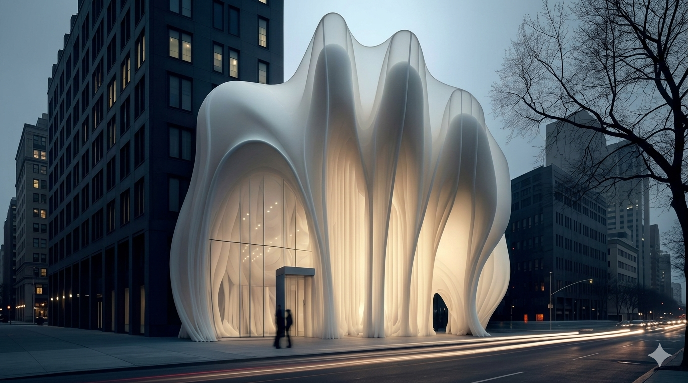

Mission Statement
MonoMuse is dedicated to exploring the evolving relationship between fashion and technology. We showcase innovative works that challenge traditional boundaries in textile design, wearable tech, and digital fashion. Through immersive exhibitions, interactive installations, and hands-on workshops, we create a space where designers, engineers, and visitors collaborate at the edge of what clothing can become.
Hours & Admission
| Day | Hours |
|---|---|
| Monday - Tuesday | Closed |
| Wednesday - Friday | 10:00 AM - 6:00 PM |
| Saturday - Sunday | 10:00 AM - 8:00 PM |
Milestones

2020
MonoMuse opens in Pittsburgh with the inaugural exhibition "Second Skin," exploring wearable technology and smart textiles.
Contact
123 Liberty Avenue, Pittsburgh, PA 15222 | info@monomuse.org | (412) 555-0192